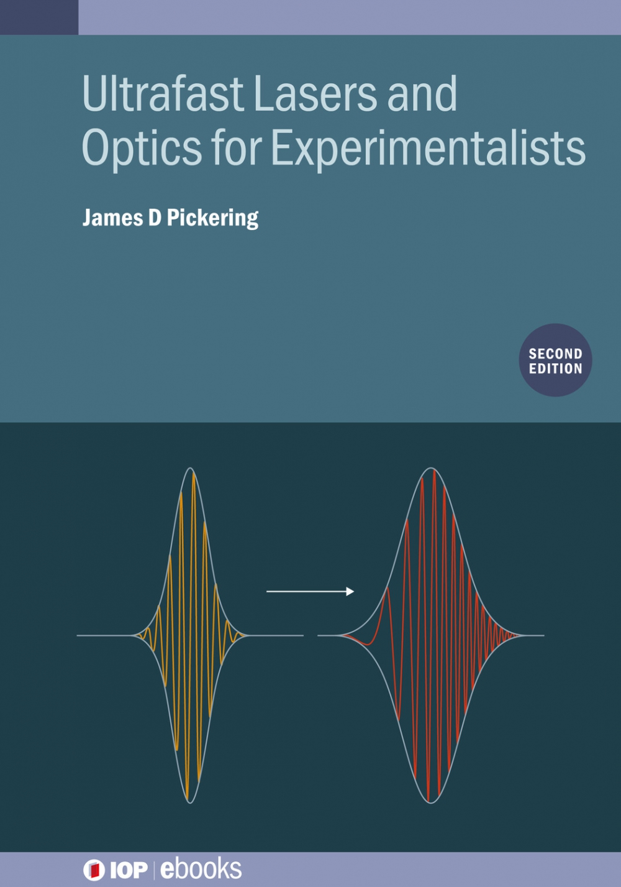

Hello
My name is James and I'm into optics, lasers, spectroscopy, and stuff. This site mostly exists as a repository for things I have written or made. These include resources for teaching; some programs for various things; some useful browser based tools for unit conversions and specific interactive plots for teaching; and some miscellanous things that doesn't fit anywhere else.
Here are some recent updates that are possibly of interest:
-
A short article exploring how the gradient descent methods that underpin the AI revolution work.
-
A very niche note about how we teach the Jahn-Teller theorem in undergraduate chemistry.
-
An opinion piece outlining the hill I will die on, which is that use of wavelength units in spectroscopy is stupid.
I've also written a short book about ultrafast lasers published through IOP ebooks. Most textbooks on laser physics are, understandably, written for physicists, but there is a rapidly growing group of laser users that don't come from this background, particularly within the life sciences. The existing textbooks are largely inaccessible for this group, so this book aims to provide some intuitive explanations of relevant phenomena - hopefully rendering many of the excellent existing laser textbooks more accessible. A new edition was released in January 2025.
